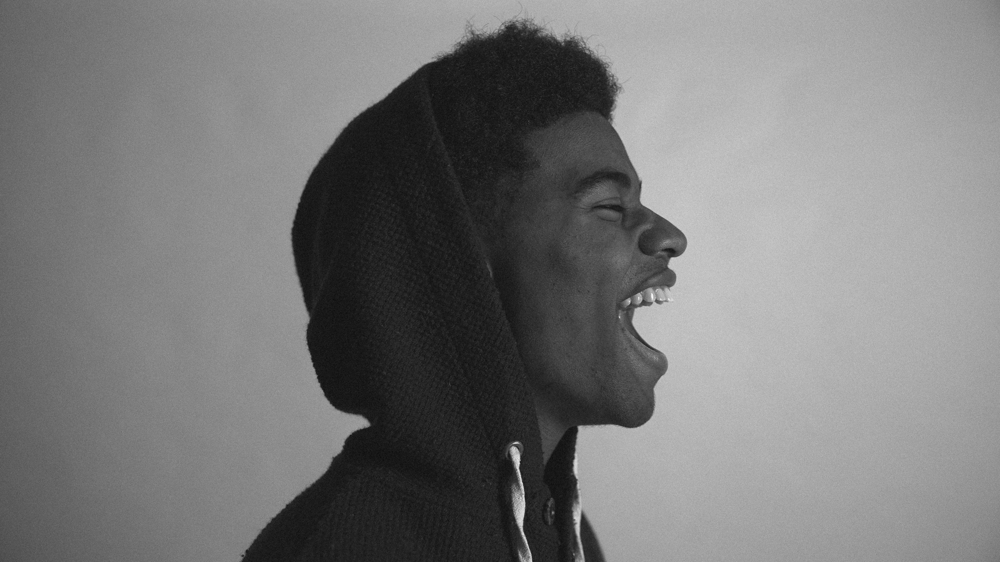
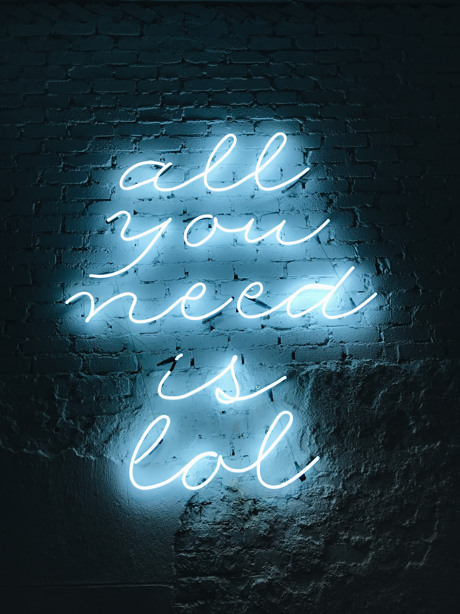
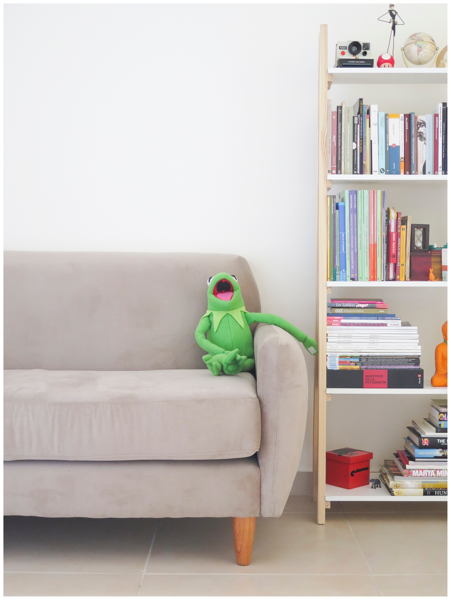
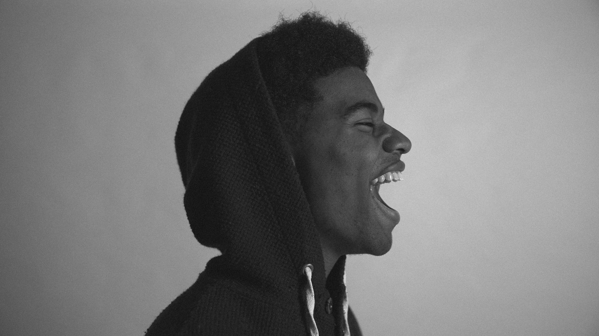
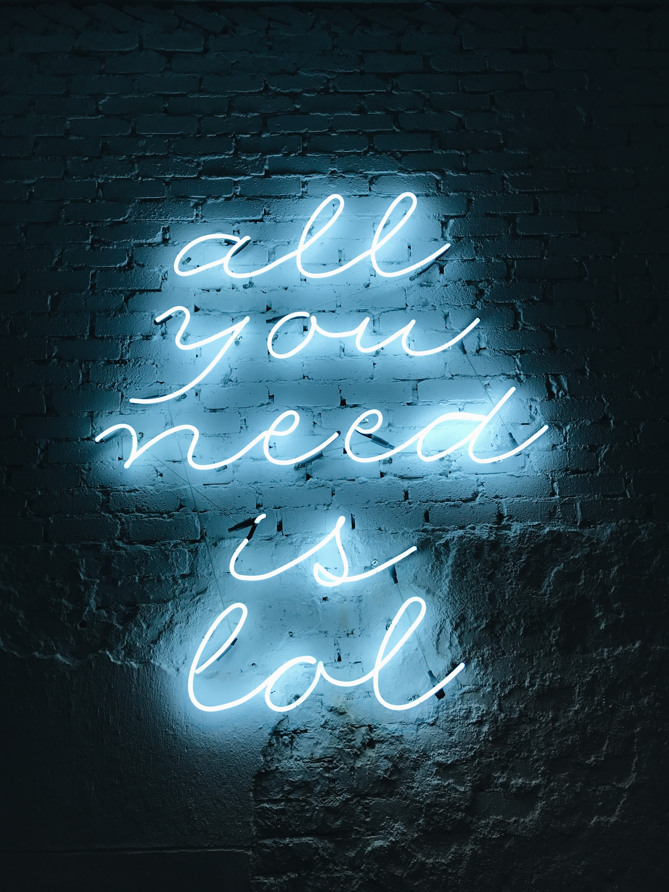
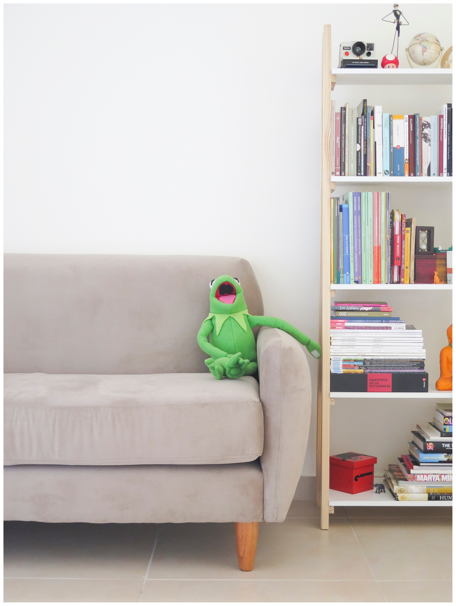

Edem's/Site
Hi my name Edem and i would like to welcome you to my site.I am an aspiring web developer who currently resides in the UK.I have always been intrigued about working as a paid software developer and tried all sorts of mediums to learn to become one.
The medium to learn included going to Uni and getting stung by JAVA(different story for another day),self learning using online resources varying from free to paid.And after not making the kind of progress i expected of myself,my family and i decided i could benefit from attending a bootcamp(for hopefully better direction and understanding).
This site is amongst the first of what i hope will become many in the future and the theme for this one is just pictures i found online that brought a smile to my face.
The plan is to keep improving and interating so make sure you watch this space for other projects.
 




